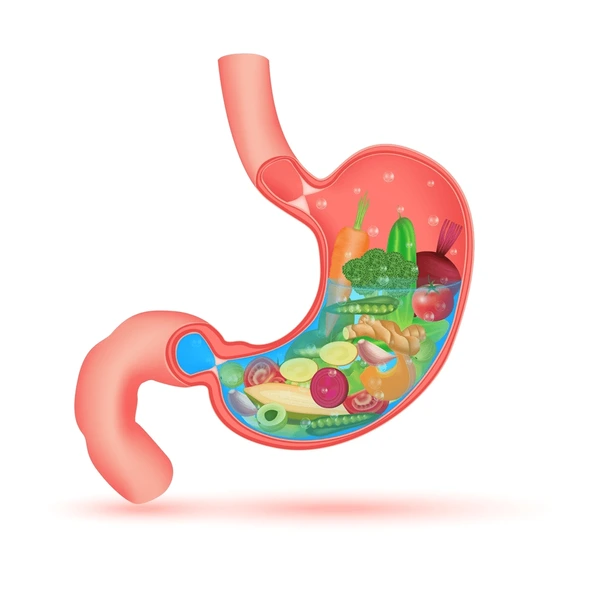
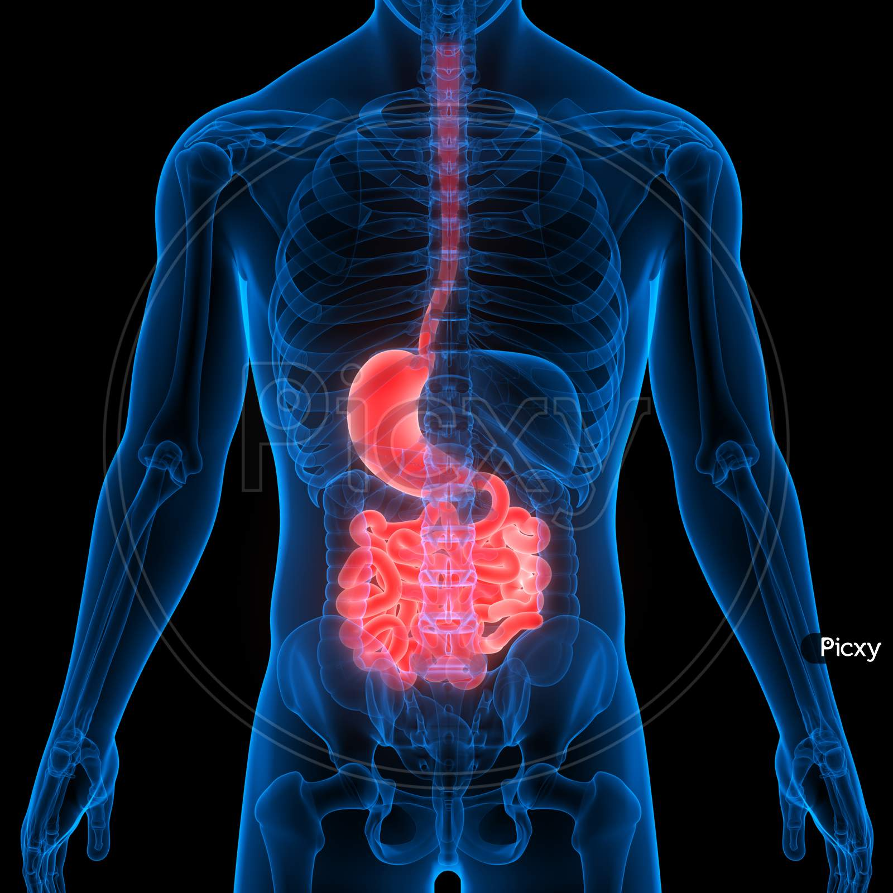
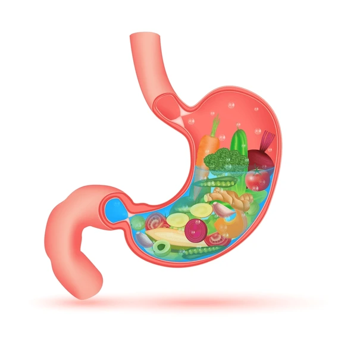
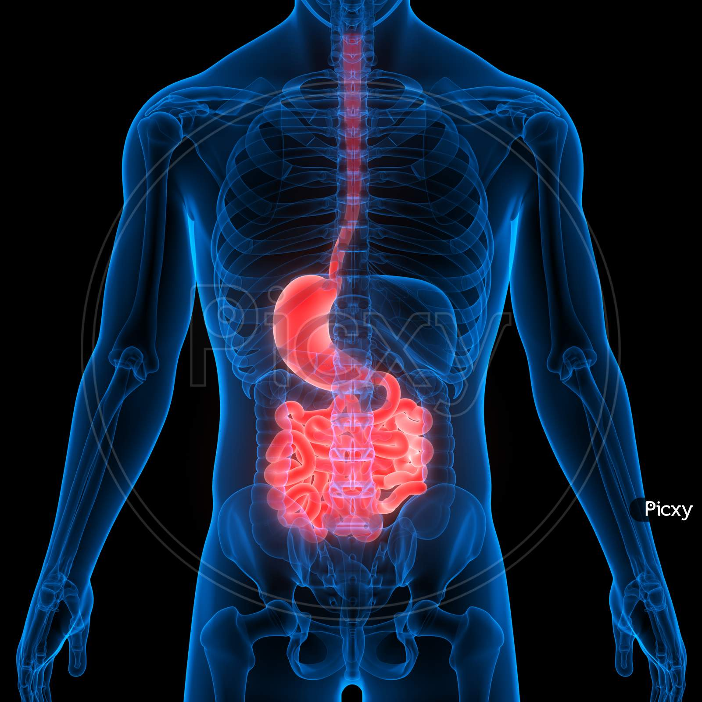

Stomach Health Information
Precautions for Stomach Health
Maintaining stomach health is essential for overall well-being. Here are some precautions:
- Eat a balanced diet rich in fruits, vegetables, whole grains, and lean proteins.
- Avoid excessive consumption of spicy, fatty, or fried foods.
- Limit intake of alcohol and avoid smoking, as these can irritate the stomach lining.
- Practice portion control and avoid overeating.
- Stay hydrated by drinking plenty of water throughout the day.
- Manage stress through relaxation techniques such as meditation, yoga, or deep breathing exercises.
- Take medications as prescribed and consult a healthcare professional before taking any new medications.
- Avoid eating late at night or immediately before bedtime.
- Practice good hygiene to reduce the risk of foodborne illnesses.
Cures for Stomach Health
Treatment options for stomach-related issues vary depending on the specific condition. Here are some common approaches:
- Medications: Depending on the underlying cause, medications may be prescribed to manage symptoms, reduce acid production, or treat infections.
- Antacids: Over-the-counter antacids may provide temporary relief from heartburn or indigestion.
- Probiotics: These supplements contain beneficial bacteria that can help restore the balance of gut microbiota and improve digestion.
- Dietary changes: Adopting a stomach-friendly diet, such as the BRAT diet (bananas, rice, applesauce, toast), can help soothe the stomach and alleviate symptoms of nausea, vomiting, or diarrhea.
- Lifestyle modifications: Managing stress, getting regular exercise, and maintaining a healthy weight can help improve overall stomach health.
- Surgery: In some cases, surgical procedures may be necessary to treat underlying conditions such as ulcers, tumors, or gastrointestinal obstruction.
 


